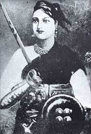

LAXMIBAI
Lakshmibai, the Rani of Jhansi (pronunciation (help·info); 19 November 1828 — 18 June 1858),[1][2] was an Indian queen, the Maharani consort of the Maratha princely state of Jhansi from 1843 to 1853 as the wife of Maharaja Gangadhar Rao.[3] She was one of the leading figures of the Indian Rebellion of 1857 and became a symbol of resistance to the British Raj for Indian nationalists.
Rani Lakshmibai was born on 19 November 1828[4][5][6] in the town of Varanasi into a Marathi Karhade Brahmin family.[7] She was named Manikarnika Tambe and was nicknamed Manu.[8] Her father was Moropant Tambe[9] and her mother Bhagirathi Sapre (Bhagirathi Bai). Her parents came from the Tambe village of the Guhagar taluka located in the Ratnagiri district of Maharashtra.[10] Her mother died when she was four years old. Her father was the Commander of the war of Kalyanpranth. Her father worked for Peshwa Baji Rao II of Bithoor district.[11] The Peshwa called her "Chhabili", which means "beautiful " and "lively and cheerful". She was educated at home and was taught to read and write, and was more independent in her childhood than others of her age; her studies included shooting, horsemanship, fencing[12][13] and mallakhamba with her childhood friends Nana Sahib and Tantia Tope.[14][15][dubious – discuss] Rani Lakshmibai contrasted many of the patriarchal cultural expectations for women in India's society at this time.[16] And she was known for her unique perspectives and her courage to fight against social norms even in front of the whole society.
Rani Lakshmibai was accustomed to riding on horseback accompanied by escorts between the palace and the temple, although sometimes she was carried in a palanquin.[17] Her horses included Sarangi, Pavan and Baadal; according to historians she rode Baadal when escaping from the fort in 1858. Her palace, the Rani Mahal, has now been converted into a museum. It houses a collection of archaeological remains of the period between the 9th and 12th centuries AD.
History of Jhansi, 1842 - May 1857
Manikarnika was married to the Maharaja of Jhansi, Gangadhar Rao Newalkar, in May 1842[4][18] and was afterwards called Lakshmibai (or Laxmibai) in honour of the Hindu goddess Devi Lakshmi and according to the Maharashtrian tradition of women being given a new name after marriage. In September 1851, she gave birth to a boy, later named Damodar Rao, who died four months after birth. The Maharaja adopted a child called Anand Rao, the son of Gangadhar Rao's cousin, who was renamed Damodar Rao, on the day before the Maharaja died. The adoption was in the presence of the British political officer who was given a letter from the Maharaja instructing that the child be treated with respect and that the government of Jhansi should be given to his widow for her lifetime.
After the death of the Maharaja in November 1853, because Damodar Rao (born Anand Rao) was an adopted son, the British East India Company, under Governor-General Lord Dalhousie, applied the Doctrine of Lapse, rejecting Damodar Rao's claim to the throne and annexing the state to its territories. When she was informed of this she cried out "Main apni Jhansi nahi doongi" (I shall not surrender my Jhansi). In March 1854, Rani Lakshmibai was given an annual pension of Rs. 60,000 and ordered to leave the palace and the fort.[19][20]
According to Vishnu Bhatt Godse, the Rani would exercise at weightlifting, wrestling and steeplechasing before breakfast. An intelligent and simply-dressed woman, she ruled in a businesslike manner.[21]
Rani Lakshmibai was born on 19 November 1828[4][5][6] in the town of Varanasi into a Marathi Karhade Brahmin family.[7] She was named Manikarnika Tambe and was nicknamed Manu.[8] Her father was Moropant Tambe[9] and her mother Bhagirathi Sapre (Bhagirathi Bai). Her parents came from the Tambe village of the Guhagar taluka located in the Ratnagiri district of Maharashtra.[10] Her mother died when she was four years old. Her father was the Commander of the war of Kalyanpranth. Her father worked for Peshwa Baji Rao II of Bithoor district.[11] The Peshwa called her "Chhabili", which means "beautiful " and "lively and cheerful". She was educated at home and was taught to read and write, and was more independent in her childhood than others of her age; her studies included shooting, horsemanship, fencing[12][13] and mallakhamba with her childhood friends Nana Sahib and Tantia Tope.[14][15][dubious – discuss] Rani Lakshmibai contrasted many of the patriarchal cultural expectations for women in India's society at this time.[16] And she was known for her unique perspectives and her courage to fight against social norms even in front of the whole society.
Rani Lakshmibai was accustomed to riding on horseback accompanied by escorts between the palace and the temple, although sometimes she was carried in a palanquin.[17] Her horses included Sarangi, Pavan and Baadal; according to historians she rode Baadal when escaping from the fort in 1858. Her palace, the Rani Mahal, has now been converted into a museum. It houses a collection of archaeological remains of the period between the 9th and 12th centuries AD.
History of Jhansi, 1842 - May 1857
Manikarnika was married to the Maharaja of Jhansi, Gangadhar Rao Newalkar, in May 1842[4][18] and was afterwards called Lakshmibai (or Laxmibai) in honour of the Hindu goddess Devi Lakshmi and according to the Maharashtrian tradition of women being given a new name after marriage. In September 1851, she gave birth to a boy, later named Damodar Rao, who died four months after birth. The Maharaja adopted a child called Anand Rao, the son of Gangadhar Rao's cousin, who was renamed Damodar Rao, on the day before the Maharaja died. The adoption was in the presence of the British political officer who was given a letter from the Maharaja instructing that the child be treated with respect and that the government of Jhansi should be given to his widow for her lifetime.
After the death of the Maharaja in November 1853, because Damodar Rao (born Anand Rao) was an adopted son, the British East India Company, under Governor-General Lord Dalhousie, applied the Doctrine of Lapse, rejecting Damodar Rao's claim to the thron
